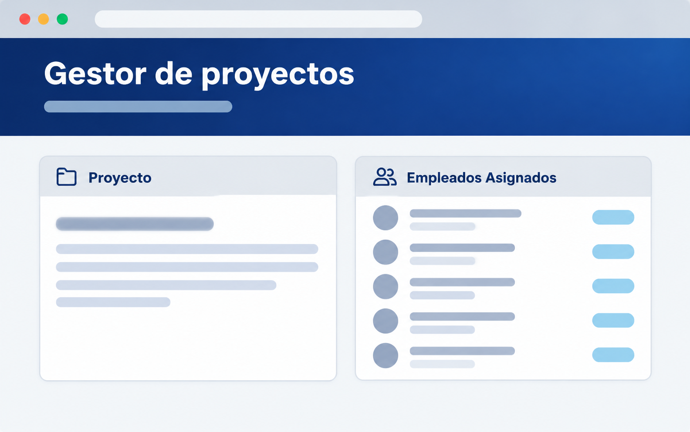
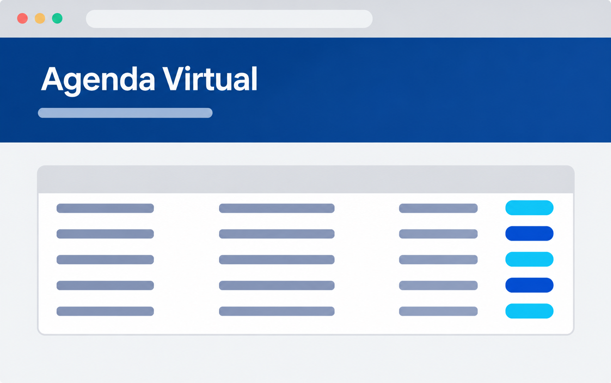
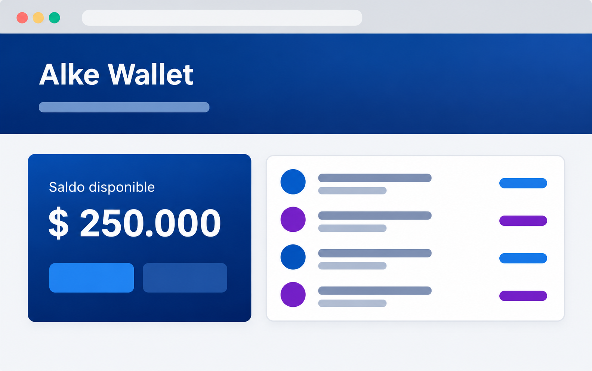

Sobre Mi
Habilidades
Frontend
- HTML
- CSS
- JavaScript
Backend
- Python
- Django
- SQL
Herramientas
- Git / Github
- Trello
- Visual studio code
Vue - Django
Me caracterizo por ser una persona metódica, analítica y orientada a la mejora continua, con interés en aprender nuevas tecnologías y fortalecer constantemente mis competencias técnicas. Busco desarrollar soluciones que combinen una experiencia de usuario intuitiva con una estructura backend sólida, priorizando la calidad, mantenibilidad y eficiencia del software.
Aqui comparto con usted algunos proyectos que e realizado durante mi periodo de estudios y como desarrollador estos siendo un Gestor de Proyectos y Tareas, un Libro Virtual y una Billetera Virtual
Gestor de proyectos y tareas

Los usuarios se registran, inician sesión y crean, editan, y eliminan proyectos y tareas. Incluye acceso restringido, formularios con validación y sitio de administración personalizado, todo esto permite y facilita la organizacion de una empresa para poder asignar sus proyectos y trabajadores de forma ordenada y segura.
Libro Virtual

Aplicación web para registrar, consultar, actualizar y eliminar citas, con persistencia de datos mediante archivos TXT, CSV y JSON. Esta agenda virtual está ambientada en una veterinaria, donde se utiliza para gestionar y registrar las horas de atención de los clientes y sus respectivas mascotas, permitiendo organizar las citas de manera eficiente y evitar conflictos de horarios entre los distintos clientes.
Billetera Virtual

Billetera digital para administrar activos financieros: Inicio de sesión, registro, saldo, depositos, envios de dinerop a contactos e historial de transacciones. Frontend y Backend.
Alke Wallet, Billetera Virtual para empresa Fintech, la cual permite el registro de nuevos clientes, asignar una cuenta unica y poder revisar el historial de movimientos de dinero de cada uno segun sea un Retiro o un Deposito.
El objetivo de este proyecto fue tomar una aplicación que ya había sido desarrollada en ocasiones anteriores y mejorarla mediante el uso de las distintas herramientas y conocimientos adquiridos durante mi formación. Se buscó optimizar su funcionamiento y estructura en la medida de mis conocimientos actuales, dejando abierta la posibilidad de continuar desarrollándola y agregar nuevas funcionalidades en el futuro.
El principal tope con el que me encontre al crear esta app era poder controlar las versiones que se creaban mientras manejaba la base de datos sin terminar generando una gran cantidad de errores debido a algun error en el codigo
La solución fue el reorden completo del codigo para hacer entender de mejor forma dicho codigo lo cual facilita el arreglar errores que pudieran surgir
Visual Estudio Code, Git/GitHub, MySQL Workbench, Python, Django, JavaScript y MySQL
Uso de lenguaje de programación como Python, C# y JavaScript y el uso de aplicaciones externas a la herramienta de uso actual.
El tiempo de creacion de este codigo fue de una semana entera tanto para la creacion bruta como el arreglo de detalles
Aun es posible mejorar el codigo ya que al momento de crearlo aun me falta experiencia tanto en el desarrollo de aplicaciones en si y en el uso de las herramientas usadas en su creacion.
En cuanto a que tan eficiente es mi app me atrevo a decir que tiene buena respuesta del codigo conectado a la base de datos pero estoy conciente que puede mejorarse aun mas con alguna correccion o cambio en su codigo.
La cobertura del codigo de Alke Wallet deberia de alcanzar al menos el 60% ya que se realizaron reiteradas pruebas de uso del codigo el cual aun puede ser mejorado aun mas, aunque el codigo aun no llegaria al 100% ya que aun debo de comentar de manera apropiada el codigo para cualquier futuro desarrollador o incluso para mi mismo pueda entenderlo de forma clara.
El elegir este proyecto fue debido a que en este se hizo uso de todas las herramientas que aprendi a usar durante mis estudios en un curso de Python Trainee por lo cual me gusta pensar que es el conjunto de todo lo que logre aprender en un producto inicial el cual puede seguir mejorando.